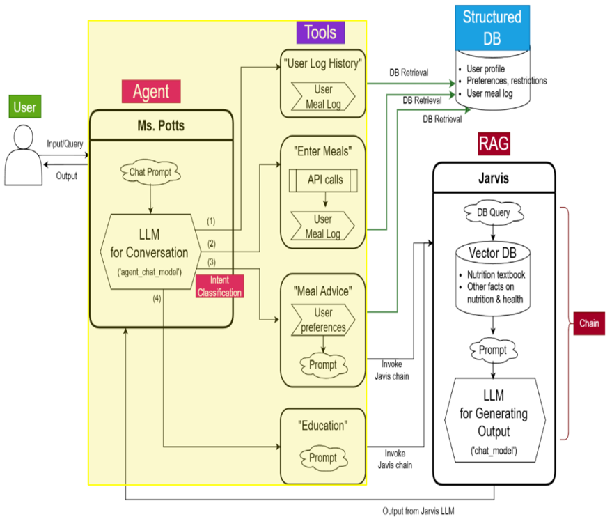

Section 2: Agent RAG Architecture
Designing NutriBot’s Reasoning Brain
In any meaningful AI assistant, the model’s ability to respond isn’t just about being clever—it’s about being contextually aware. It needs to understand the user’s goal, retrieve what’s relevant, and pick the right path forward. That’s exactly what we engineered in NutriBot’s Agentic RAG architecture.
At the heart of the system is Ms. Potts, an LLM-based agent that doesn’t just respond to queries—it thinks, routes, and decides what tools or data sources to invoke.
The design blends:
- A conversational LLM to understand and process natural language prompts
- An intent classifier to predict the goal behind each query
- A tool router that invokes specific APIs or document chains
- A RAG engine (“Jarvis”) to generate grounded responses
- A structured user data store to personalize responses
System Design Overview
Here’s how the core components interact:

Key modules include:
- Ms. Potts: Our LLM agent powered via AWS Bedrock, orchestrating tool use and response flow.
- Intent Classifier: Determines the nature of the user’s query—log, plan, educate, or personalize.
- Tool Layer:
- Meal Logging: Stores and retrieves user meals.
- Meal Planner Tool: Builds meal plans based on user profile + goals.
- Nutrition Advice Module: Surfaces relevant facts or suggestions using retrieval.
- Personalized Advice Generator: Combines structured data and vector-based content.
- Structured User Data Store: Stores user preferences, restrictions, and historical logs.
- RAG Engine + Generation (“Jarvis”): Handles retrieval-augmented generation using Chroma vector store and a response LLM.
User Workflow: What NutriBot Actually Does
Before diving into individual components, let’s look at how users actually interact with the system. Each user has a different goal—and NutriBot routes their query accordingly.
Here’s how it plays out in real life:
- User 1: “Log my lunch: turkey sandwich, apple, and iced tea”
→ Ms. Potts sends data to the Meal Logging Tool, which updates the Structured DB. - User 2: “What should I avoid eating with prediabetes?”
→ The Intent Classifier detects this as a need for medical-aware personalization. → The query is routed to the Personalized Advice Module, which retrieves related health guidelines from the Vector DB, and passes the context to the LLM for answer generation. - User 3: “Can you create a meal plan for weight loss?”
→ Routed to the Meal Planner Tool, which combines user profile + goal inputs + nutritional content retrieved from Jarvis to generate a tailored plan. - User 4: “How does protein help with muscle building?”
→ Routed to the Education Module, which pulls factual responses using our RAG chain.
In every case, Ms. Potts acts as a conductor—receiving the query, identifying the intent, and invoking the right tool or data chain. This allows the system to respond not just with a generated sentence, but with an actionable answer, backed by structure, retrieval, and reasoning.
Why This Matters
Building this system taught me how to:
- Architect multi-step LLM Agent workflows that are modular and reusable
- Combine retrieval chains with tool calls to support both factual grounding and decision support
- Use intent classification to cleanly separate user goals and optimize routing
- Deploy LLMs through AWS Bedrock for secure, production-grade performance
- Tune document chunking + retrieval via Chroma to maximize response relevance